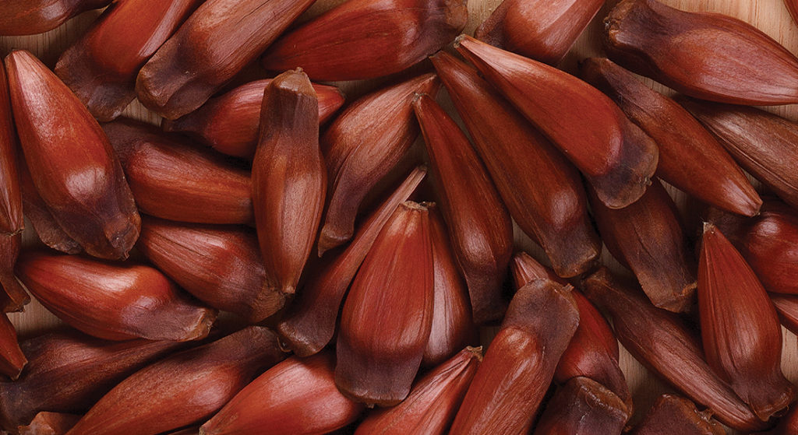
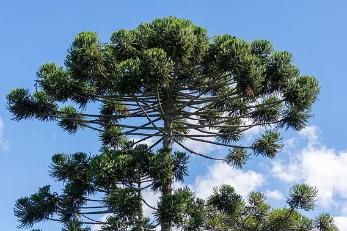
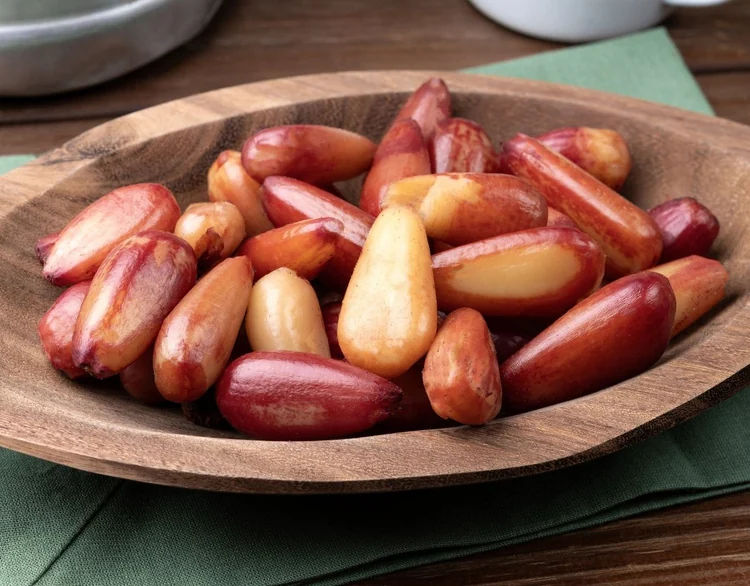

SOBRE O PINHÃO
O PINHÃO É A SEMENTE DA ARAUCÁRIA, UMA ÁRVORE SÍMBOLO DO SUL DO BRASIL. ELE É UM ALIMENTO TRADICIONAL DE INVERNO QUE FAZIA PARTE DA DIETA DOS POVOS INDÍGENAS E SERVIU DE SUSTENTO PARA OS ANTIGOS TROPEIROS. NA NATUREZA, O PINHÃO ALIMENTA ANIMAIS SILVESTRES E É PLANTADO PELA GRALHA-AZUL, QUE ENTERRA AS SEMENTES NO SOLO. POR SER UMA ESPÉCIE AMEAÇADA, SUA COLHEITA SÓ É PERMITIDA A PARTIR DE ABRIL. MUITO NUTRITIVO E SEM GLÚTEN, O PINHÃO É RICO EM ENERGIA, FIBRAS E MINERAIS SENDO CONSUMIDO E COZIDO NA PANELA DE PRESSÃO, ASSADO NA CHAPA OU EM PRATOS TÍPICOS COMO O ENTREVERO E A PAÇOCA.
SEU CONSUMO É MUITO COMUM DURANTE O OUTONO E O INVERNO, PRINCIPALMENTE NOS MESES MAIS FRIOS DO ANO. O PINHÃO PODE SER PREPARADO COZIDO, ASSADO OU UTILIZADO EM DIFERENTES RECEITAS DA CULINÁRIA REGIONAL. .
ALÉM DE SER UM ALIMENTO, O PINHÃO REPRESENTA UMA PARTE IMPORTANTE DA IDENTIDADE DO PARANÁ. ELE ESTÁ PRESENTE EM FESTAS POPULARES, ENCONTROS FAMILIARES E TRADIÇÕES QUE PASSAM DE GERAÇÃO PARA GERAÇÃO.

História e Origem
O pinhão faz parte da alimentação e da história dos povos que habitavam o território paranaense muito antes da formação das cidades atuais. Povos indígenas, especialmente os ligados à região das araucárias, utilizavam essa semente como fonte de alimento.
A araucária, também conhecida como pinheiro-do-paraná, era muito presente nas paisagens do estado. Seus frutos forneciam pinhões, que eram coletados e preparados de diferentes maneiras.
Com o passar do tempo, o consumo do pinhão continuou fazendo parte dos costumes da população. A tradição foi transmitida entre famílias e comunidades, tornando-se uma característica da cultura regional.
Atualmente, o pinhão é conhecido em várias regiões do Brasil, mas mantém uma ligação especial com a história, a natureza e a identidade do Paraná.

Importância Artística e Cultural
O pinhão possui grande importância para a cultura paranaense. Ele representa os costumes, a alimentação e a relação das pessoas com a natureza.
Na culinária, o pinhão é utilizado em pratos tradicionais, como farofas, sopas, paçocas e outras receitas típicas. Seu sabor faz parte da identidade gastronômica do Paraná.
O pinhão também aparece em festas, feiras e eventos culturais. Um exemplo é a Festa Nacional do Pinhão, realizada em Lages, Santa Catarina, que valoriza esse alimento e as tradições da região Sul.
A araucária e o pinhão também inspiram fotografias, pinturas, artesanatos, desenhos e outras manifestações artísticas que representam a natureza e a cultura regional.

Curiosidades
De onde vem o pinhão?
O pinhão é a semente produzida pela araucária, árvore conhecida como pinheiro-do-paraná.
Quando é consumido?
Seu consumo é muito comum durante o outono e o inverno, principalmente nos dias frios.
Como pode ser preparado?
Pode ser cozido ou assado e também utilizado em diversas receitas, como farofas e sopas.
Qual é a árvore do pinhão?
A araucária é a árvore responsável pela produção dos pinhões e é um dos símbolos naturais do Paraná.
O pinhão é nutritivo?
Sim. Ele contém carboidratos, fibras e minerais, sendo um alimento energético.
Memória e Patrimônio
O pinhão faz parte da memória e do patrimônio cultural do Paraná. Sua história está relacionada aos povos indígenas, às comunidades tradicionais e aos costumes das famílias paranaenses.
A araucária também possui grande importância ambiental. Ela faz parte da Floresta com Araucárias, um ecossistema característico do Sul do Brasil que precisa ser preservado.
As tradições relacionadas ao pinhão ajudam a manter viva a cultura regional. Receitas, festas, histórias e lembranças familiares mostram como esse alimento continua presente na vida das pessoas.
Preservar as araucárias significa proteger a natureza, a biodiversidade e também uma parte importante da identidade cultural paranaense.